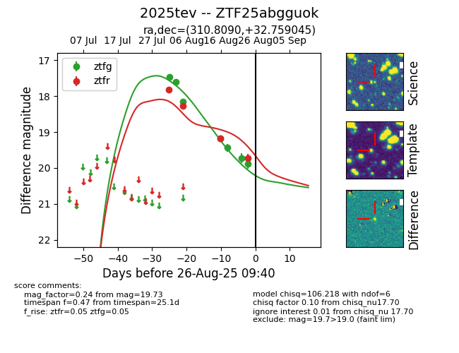

Target 2025tev at 2025-08-26 09:40, see:
FINK: fink-portal.org/ZTF25abgguok
Lasair: lasair-ztf.lsst.ac.uk/objects/ZTF25abgguok
ALeRCE: alerce.online/object/ZTF25abgguok
TNS: wis-tns.org/object/2025tev
YSE: ziggy.ucolick.org/yse/transient_detail/2025tev
alt names
ZTF25abgguok (ztf,fink)
2025tev (tns,yse)
coordinates:
equatorial (ra, dec) = (310.8090,+32.75905)
galactic (l, b) = (74.6076,-5.97255)
photometry
last ztfg=19.89, ztfr=19.73
7 ztfg, 4 ztfr detections
